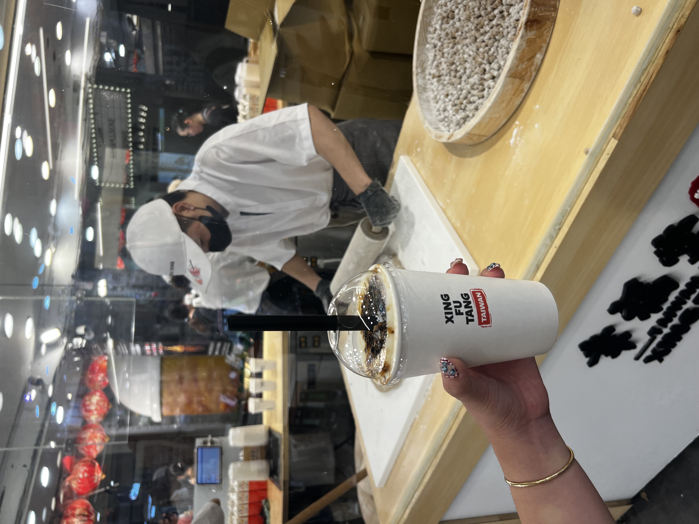
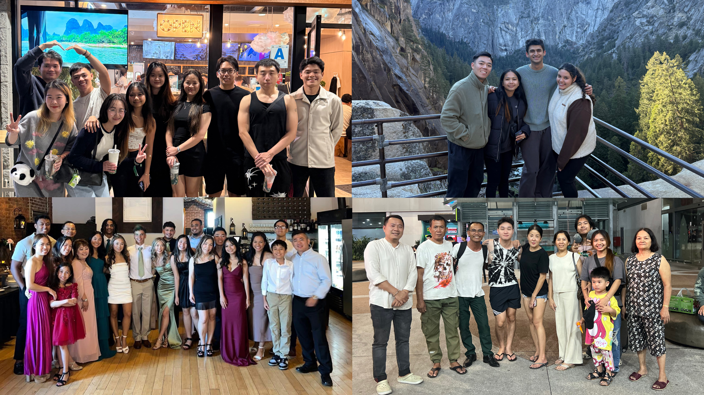
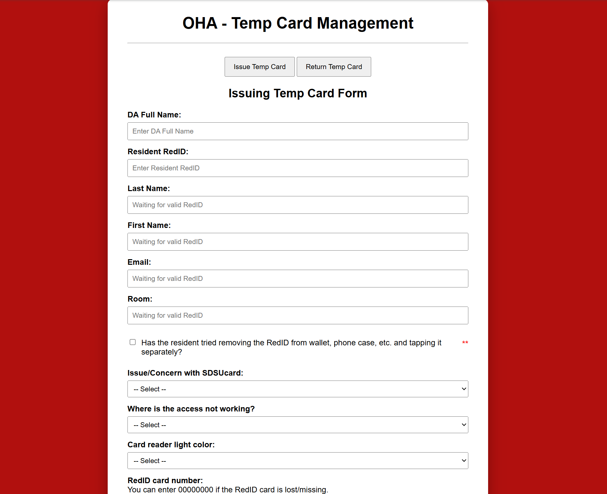
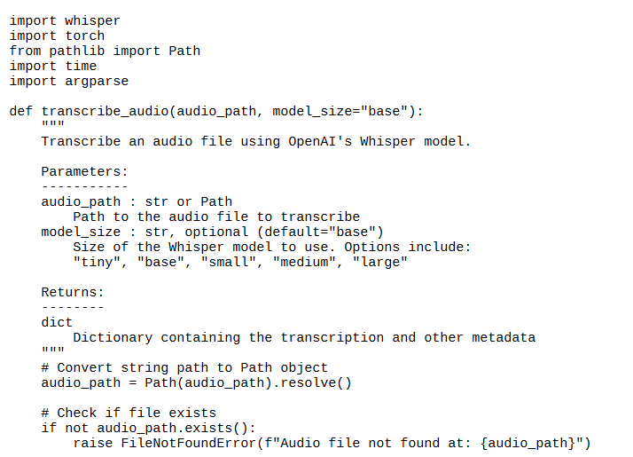
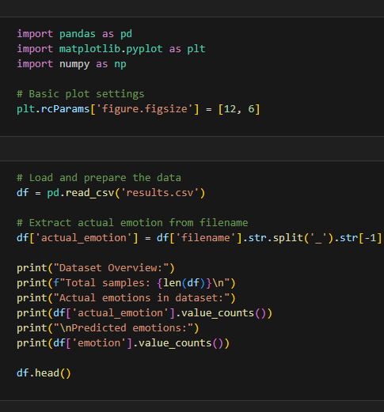
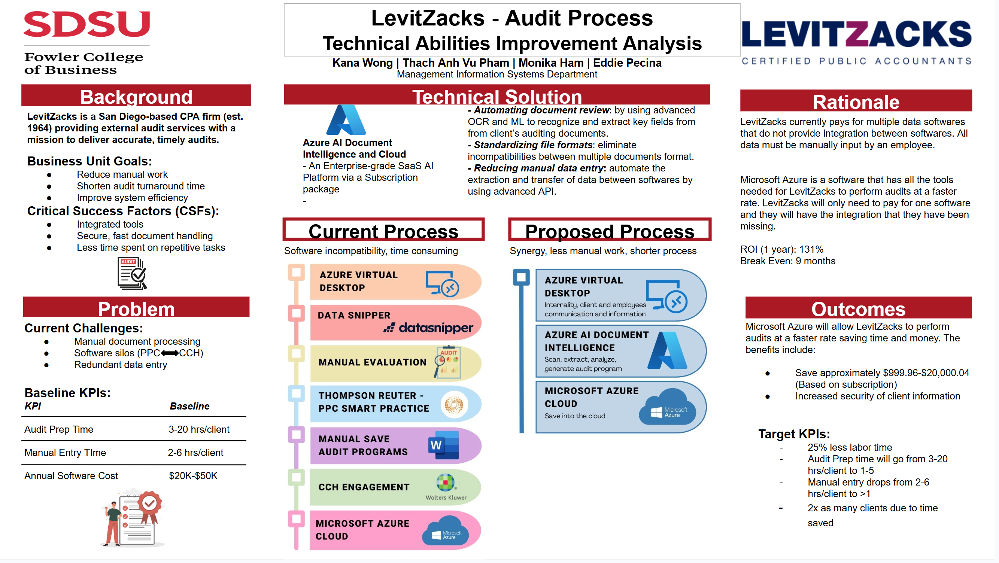
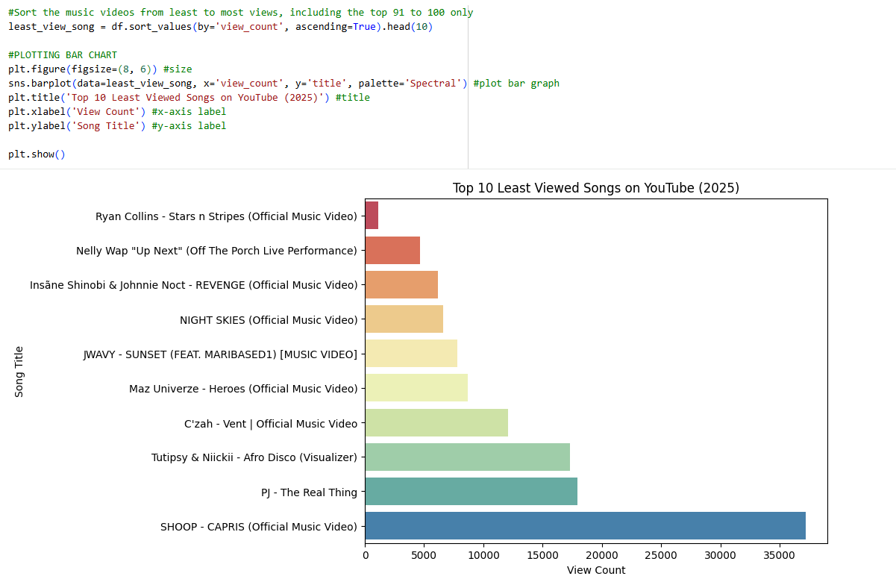
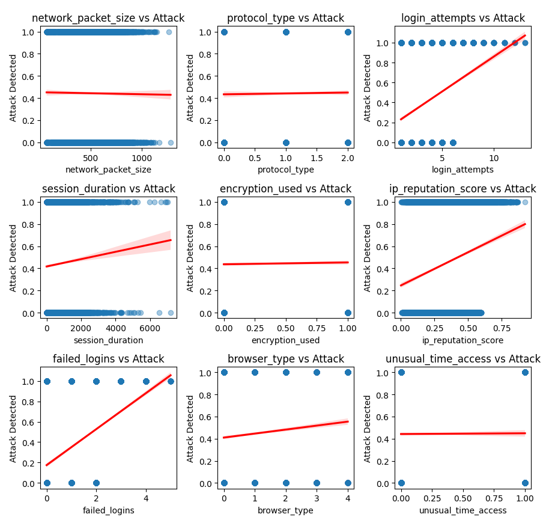

Monika
Ham
Aspiring Analyst
Aspiring Analyst
I graduated from San Diego State University with a Bachelor of Science in Management Information Systems, earning a 3.79 GPA.
Through my coursework in data management, business intelligence, accounting, and statistical analysis, I developed strong analytical and problem-solving skills, complemented by SDSU Leadership Certificate.
What drew me to MIS is its blend of technical expertise—such as data analysis and programming—with strategic business thinking and problem-solving. I aim to use data and technology to drive informed decisions and improve organizational performance.
Analytical & Technical
Security & Systems

Hiking

Exploring boba spots
Going to the beach
Watching the sunset

Spending time with family and friends
San Diego State University — Office of Housing Administration
San Diego State University — International Affairs
San Diego State University — International Admissions
San Diego State University — Office of Housing
TK Something BBQ
Time Deal Builder Co. Ltd





